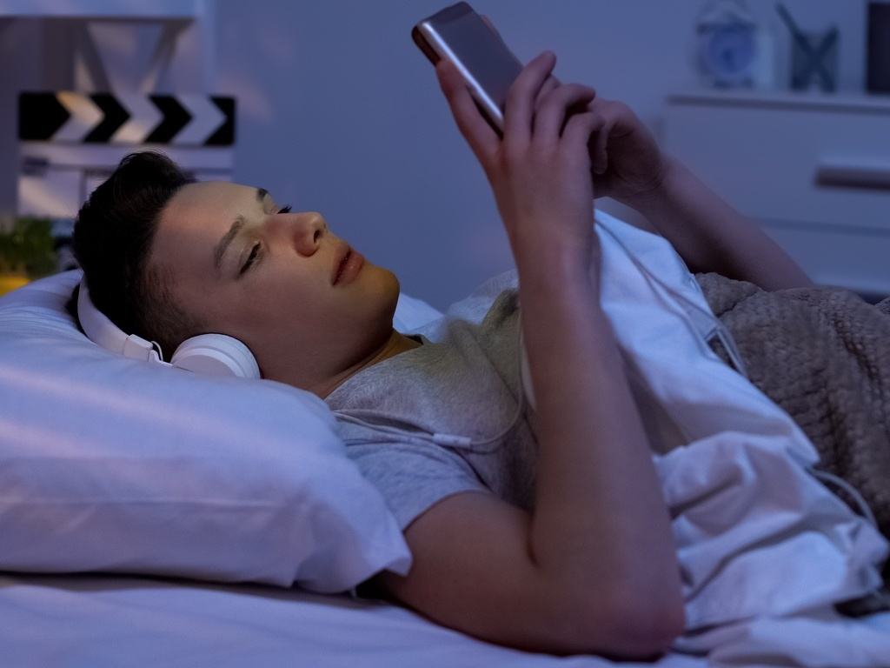

Pesquisa destaca os efeitos negativos da exposição prolongada às telas antes de dormir
Um estudo recente conduzido por pesquisadores da área da saúde revelou que o uso excessivo de dispositivos eletrônicos por adolescentes pode ter consequências negativas para a qualidade do sono. A pesquisa, que analisou um grupo de 50 adolescentes com idades entre 13 e 17anos, identificou uma correlação preocupante entre a quantidade de tempo gasto em frente às telas e problemas relacionados ao sono.
O estudo, que durou 6 meses, investigou os hábitos de sono de adolescentes e seu uso de dispositivos eletrônicos, como smartphones, tablets e computadores, principalmente antes de dormir. Os resultados indicaram que a exposição prolongada à luz azul emitida por esses dispositivos pode prejudicar a qualidade e a duração do sono.
Os pesquisadores observaram que a luz azul, presente nas telas dos dispositivos eletrônicos, suprime a produção do hormônio melatonina, responsável por regular o sono. Como resultado, os adolescentes enfrentam dificuldades para adormecer e apresentam um sono fragmentado e de menor qualidade.